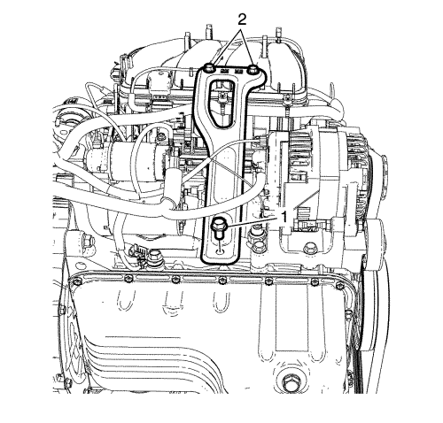
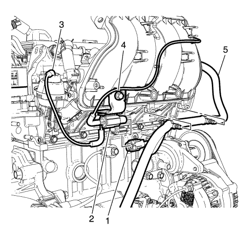

Extraiga las tuercas de retención (3) del EGR al conducto EGR y el perno de retención (2) del soporte del conducto EGR al colector de admisión inferior.
Desmonte el conducto EGR (1) y la junta EGR (4).

Desmonte los pernos de retención (2) del soporte del colector de admisión trasero al colector de admisión inferior.

Desconecte el tubo flexible (3) del actuador de la válvula de control de la guía de deslizamiento del colector de admisión (IMRC).
Desenchufe el conector de la válvula IMRC (1) de la válvula IMRC (2).
Extraiga el perno (4).
Desmonte la válvula IMRC (2).
Desmonte el mazo de cables (5) del colector de admisión inferior.
Monte el colector de admisión trasero y apriete el perno y las tuercas (1) a 10 N·m (89 lib. pulg.).
Bajar el vehículo.
Monte el mazo de cables (5) por el orificio de retención del colector de admisión.
Monte la válvula (2) de control de la guía de deslizamiento del colector de admisión (IMRC) con el soporte y apriete los pernos (4) a 10 N·m (89 lib. pulg.).
Enchufe el conector de la válvula IMRC (1) a la válvula IMRC (2).
Conecte el tubo flexible (3) al actuador de la válvula IMRC.
Monte los pernos (2) y apriételos a 10 N·m (89 lib. pulg.).
Monte la junta del conducto EGR nueva.
Monte el conducto EGR (1) y apriete las tuercas (3) a 10 N·m (89 lib. pulg.) y los pernos (2) a 10 N·m (89 lib. pulg.).